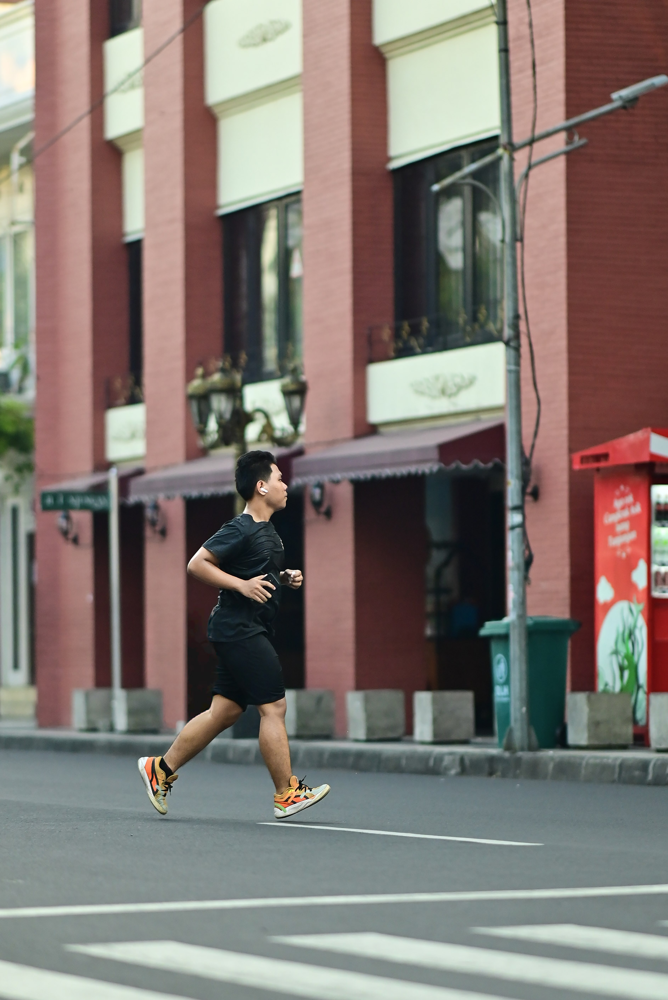
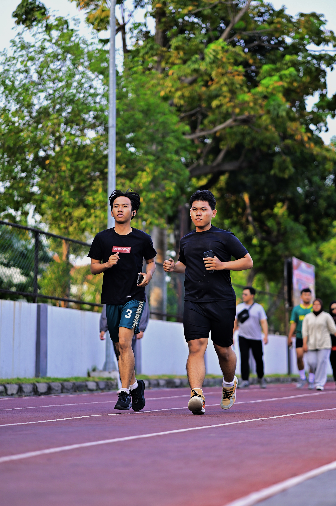

Tentang Saya
Hallo Semua perkenalkan nama saya Pranata Junjung Megasaputra. Saya merupakan pribadi yang memilki rasa ingin tahu yang tinggi dan juga suka mempelajari hal-hal baru, terutama dibidang teknologi dan komputer. Saya lebih cenderung terbiasa belajar secara mandiri dan menikmati proses memahami bagaimana suatu sistem itu bisa bekerja. Saya sangat yakin bawa perkembangan diri bisa dicapai melalui konsisten dalam belajar dan mencoba hal-hal baru.

Hobi & Keahlian Saya
Saya memiliki beragam minat, hobi, dan keterampilan yang menjadi bagian dari proses pengembangan diri saya, di antaranya:
Berlari
Untuk Hobi ini saya baru memulainya 2 bulan yang lalu. Saya awalnya mencoba berjalan terlebih dahulu lalu dirasa cukup mencoba lari berjarak 3km, dan bertahap hingga 10 km untuk saat ini.
Dokumentasi Lari :
Berikut adalah beberapa foto saat saya sedang berlari :


Basket
Hobi kedua saya adalah Basket.. Saya bermain basket semenjak dibangku SMP dan mengikuti kegiatan ekstrakulikuler basket SMP. Tetapi di SMA saya lebih memilih tidak melanjutkan ekstrakulikuler basket, dikarenakan saya lebih memilih berfokus ke pendidikan formal dan bermain basket hanya untuk senang-senang saja.
Desain Grafis
Saya memiliki sedikit keahlian dibidang Desain Grafis. Saya tertarik belajar desain Grafis secara otodidak di masa SMP, mulai dari belajar fundamental, aplikasi desain grafis ringan yaitu Canva. Saya juga mengikuti ekstrakulikuler desain grafis di SMP selama 1 periode saja. Lalu dimasa SMA saya melanjutkan desain grafis ini dengan mengikuti organisasi jurnalistik sekolah yaitu Jurnalix.. Pada organisasi inilah kemampuan desain grafis saya terus berkembang. tidak hanya belajar desain, saya juga belajar soft skill, berkolaborasi dengan berbagai divisi dan banyak hal seru lainnya.
Karya & Portofolio
Berikut adalah beberapa hasil desain dan dokumentasi saya:


Reparasi Komputer & laptop
Reparasi komputer & laptop ini sudah saya tekuni semenjak kelas 3 SD, saya sangat tertarik pada keahlian ini dikarenakan saya dilihatkan oleh paman saya sebuah komputer lama lalu saya tertarik untuk mengeksplor lebih lanjut tentang Komputer & Laptop. Hingga ssaat ini saya masih terus untuk belajar dan berkembang bagaimana teknologi Komputer & laptop di masa yang akan datang.
 Instagram
Instagram
 Linkedin
Linkedin
 WhatsApp
WhatsApp